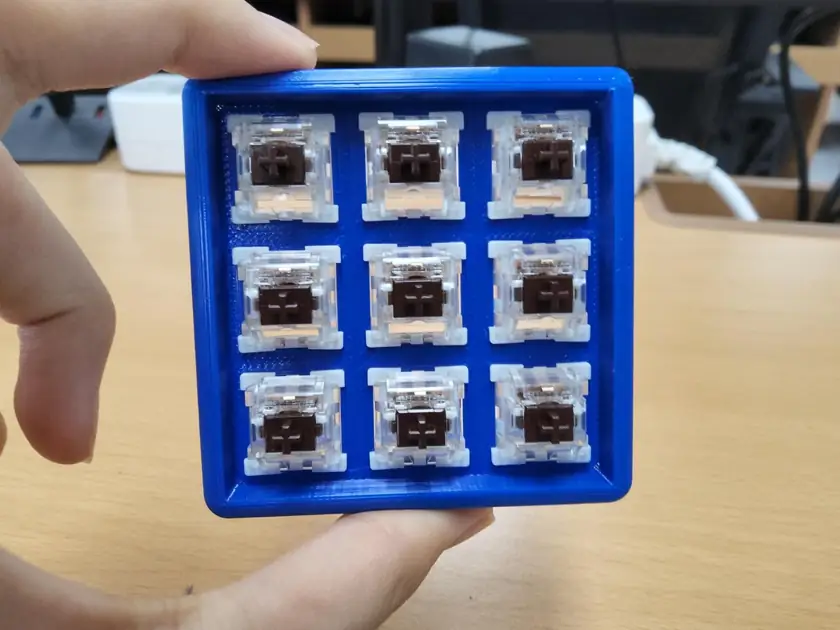
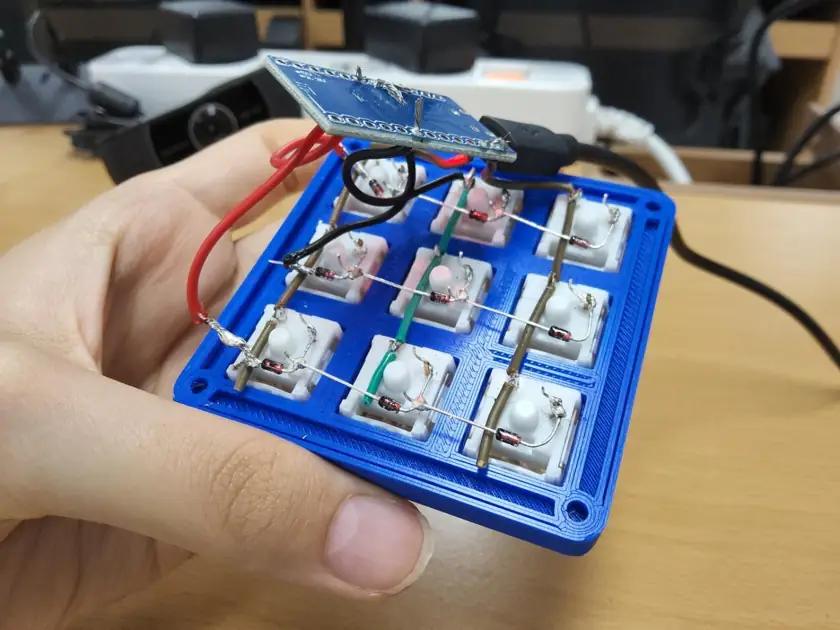
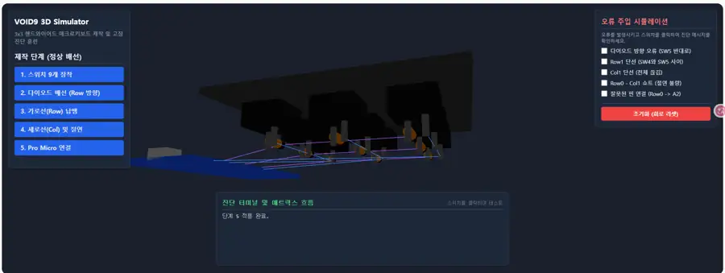
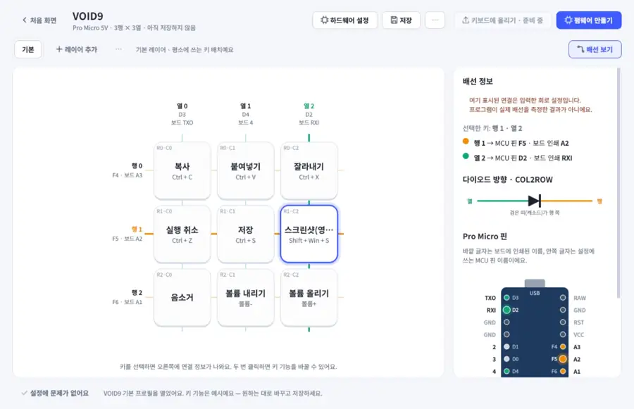

단축키가
번거로웠다.
반복해서 쓰는 명령을 매번 조합키로 누르기보다 작은 전용 버튼으로 실행하고 싶었습니다.
기존 키보드의 불편함을 줄이려고 만든 작은 매크로패드. 그런데 직접 만들고 보니, 키보드를 만드는 과정 자체를 더 쉽게 할 방법이 필요했습니다.
VOID9 / 3D WIRING GUIDE / KEYBOARD STUDIO
복사·붙여넣기나 화면 캡처처럼 자주 사용하는 기능을 내가 원하는 위치의 버튼 하나에 넣고 싶었습니다. 선생님의 부품·장비 지원을 계기로 직접 제작에 도전했습니다.
반복해서 쓰는 명령을 매번 조합키로 누르기보다 작은 전용 버튼으로 실행하고 싶었습니다.
스위치, 다이오드, 행·열, 제어 보드의 연결을 입체적으로 이해하고 확인하는 과정이 생각보다 까다로웠습니다.
키맵 작성, QMK 컴파일, 펌웨어 업로드를 여러 도구에서 나눠 진행해야 했습니다.
9개의 기계식 스위치, 9개의 1N4148 다이오드, Pro Micro 제어 보드, 3D 출력 케이스. 회로를 직접 연결하고 펌웨어를 적용했습니다.

기계식 스위치 9개를 3D 출력 케이스에 결합하고 행·열 구조를 구상했습니다.

다이오드 방향을 맞추고 가로 행과 세로 열을 연결했습니다. 사진은 제작 후반 작업 모습입니다.
USB 연결이 반복해서 끊기던 원인은 GND 연결선의 납땜 이탈이었습니다. 재납땜 후 정상 작동했습니다.
USB가 연결됐다 끊기는 현상을 펌웨어 문제로 단정하지 않았습니다. 실물의 연결 상태를 확인해 접지선의 납땜 이탈을 찾아 수정했고, 이후 정상 동작을 확인했습니다.
※ 사진만으로 전기적 접촉 상태를 측정한 것은 아닙니다. 원인과 수정 결과는 제작 중 실제 확인한 기록입니다.
직접 납땜을 해 봐야 보이는 어려움을, 다른 제작자도 화면에서 미리 이해할 수 있도록 3D 학습 도구로 옮겼습니다.

키보드를 회전하고 확대하며 실제로 납땜할 배선 위치를 살펴봅니다.
다른 색과 강조 표시로 필요한 신호선만 집중해서 확인합니다.
잘못된 연결이 왜 문제가 되는지 화면에서 이해하도록 돕습니다.
실제 회로를 자동 측정하는 장비는 아닙니다. 일부 초기 버전의 핀 표기는 최종 원본과 달라 교정이 필요합니다.
2026.09.20 배포 기록 · 원본 HTML은 아직 이 저장소에 이전되지 않음 · 핀 표기는 실제 QMK 원본과 대조 필요
내가 만든 키보드를 설정하려면 코드 편집과 여러 도구를 오가야 했습니다. 그래서 첫 설정부터 업로드까지 하나로 묶는 Windows 프로그램을 기획했습니다.

행·열 개수 → Pro Micro 핀 지정 → 키 기능·FN 레이어 → QMK 설정 생성 → 펌웨어 컴파일 → 실제 기기 업로드.
초기에는 Pro Micro 5V/16MHz·유선·다이오드 행렬 방식에 집중하고, 화면상 배열은 깔끔한 사각형 격자로 표현했습니다.
모든 면에서 기존 프로그램보다 낫다는 주장은 아닙니다. 출발 단계가 다릅니다.
| 도구 | 주로 잘하는 일 | 자작 키보드 제작자의 첫 단계 |
|---|---|---|
| QMK Configurator | 이미 지원되는 키보드의 키맵을 시각적으로 편집 | 미등록 자작 키보드는 별도의 정의가 먼저 필요 |
| VIA / Vial | 호환 펌웨어가 있는 키보드의 키 기능을 편리하게 변경 | 처음에는 호환 펌웨어와 보드 설정이 필요 |
| Keyboard Studio | 행·열·핀 정의부터 생성·컴파일·업로드까지 | 직접 배선한 Pro Micro 키보드의 최초 설정을 지원 |
클라우드에서 코드가 돌아간다는 결과만으로 끝내지 않았습니다. 실제 Windows PC에서 프로그램을 실행하고, VOID9에 새 펌웨어를 올려 키 동작을 확인했습니다.
제작자가 직접 확인한 실제 사용 결과입니다. 9개 버튼과 FN 레이어가 정상 작동했고, USB 연결 불안정도 GND 연결선 재납땜으로 해결했습니다.
개발 저장소의 CI 자동 테스트와 실제 VOID9 검증은 서로 다른 수준의 시험입니다. 다른 사용자·다른 보드의 호환성까지 검증된 것은 아닙니다.
AI를 활용한 개발은 '버튼을 누르면 저절로 완성되는 일'이 아니었습니다. 무엇을 왜 만들어야 하는지 구체적인 요구사항을 정의하고 결과물을 검토하는 과정이 중요했습니다.
하드웨어 배선·납땜, 문제 발견, 키보드 UX 요구사항 정리, 지원 범위 결정, 오류 화면·배선 표시 요구, 오프라인 배포 방향 결정, 실제 업로드와 키 동작 확인.
3D 웹 코드와 Python/PySide6 프로그램 구현, QMK 도구 통합, 자동화 테스트 및 개발 중 소프트웨어 버그 수정은 AI 개발 도구의 지원을 받았습니다.
현재 Keyboard Studio의 소스 저장소는 비공개입니다. 향후 다른 자작 키보드에서 호환성을 확인하고, 사용자 테스트·업로드 안전성·개인정보·라이선스를 검토한 뒤 공개 소스 전환을 고려하고 있습니다. 사용자의 신체적 조건에 맞춘 단순한 입력 방식 역시 추가로 탐구할 수 있는 방향입니다.
처음으로 돌아가기 ↑이 페이지는 학교 진로맞춤형 탐구 결과를 소개하는 공개 전시 자료이며, 비공개 개발 저장소의 코드·개인정보는 포함하지 않습니다.